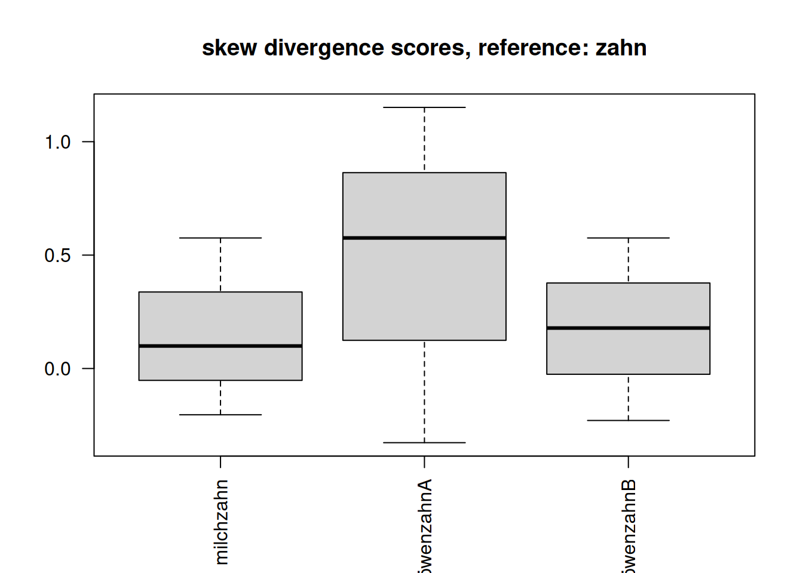
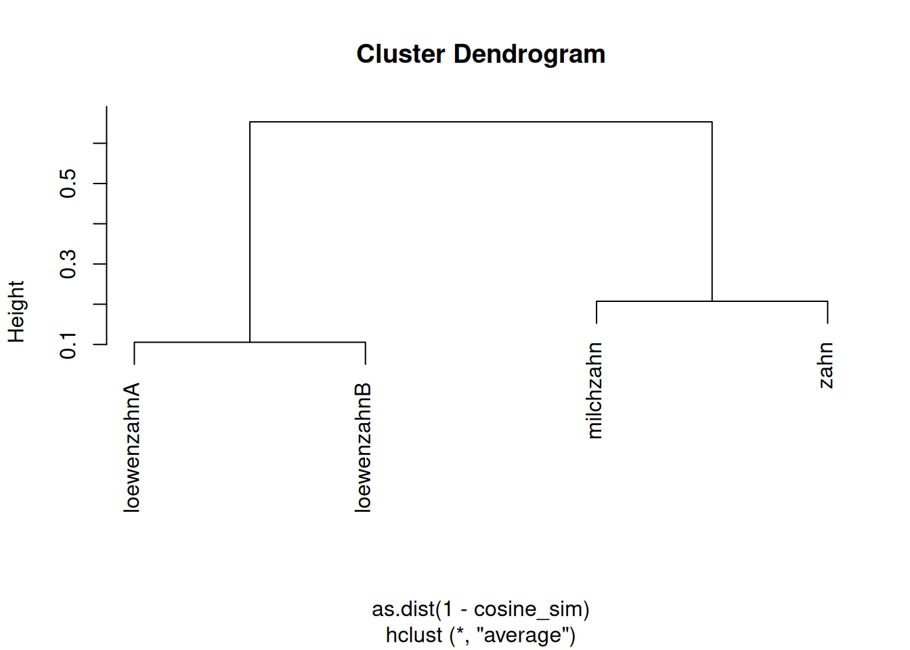

[1] "engine on..."LX / Tech
Sprache und Technologie - Language and Technology
vectors
noun compounds
llms
class: [16830] Sprache und Technologie - Language and Technology:: tutor: frankowsky :: term: SS26 snc: 16175.1
index / LXTech
snc
- button.123456789
- chunk out
index
- samling: margin notes general > open
- LLM and LX theories, play claude
- claude writes english story based on french grammar > open, original: claude
- play along model training on corpus: having Claude devise grammar from synthetic text > link
samling
zinsmeister
play
# computing skew divergence score for noun-noun compound vectors
# Q: zinsmeister(2013)
# D(p||q) = Sig^i p^i x log(p^i/q^i)
l1<-c(0.6,0.4,0) # milchzahn
l2<-c(0.25,0.5,0.25) # zahn
l3<-c(0,0,1) # löwenzahn
### test: löwenzahn::ziehen=1 occurence instead 0
l4<-c(0,1,2)
l5<-unlist(lapply(l4,function(x){
x/sum(l4)
}))
########################
# l2 is the reference p
# l1,l3 are the target q probabilities which are projected on /smoothed by reference p
#############################################
lx<-list(list(l2,l1),list(l2,l3),list(l2,l5))
#f<-sum(pi*(log(pi/qi)))
# latex entropy: $H(X) := -\sum_{x \in \mathcal{X}} p(x) \log2 p(x)$
# \sum{p(i)(log(p(i)/q(i)))}
w<-0.9
s1<-lapply(lx,function(l){
print(l)
# lapply(l,function(p){
# cat("p:",p,"\n")
s<-array()
for(i in 1:length(l[[1]])){
p1<-l[[1]][i]
q1<-l[[2]][i]
qi<-(w*q1)+((1-w)*p1) # qi smoothed
cat("qi:",qi,"\n")
# s[i]<-sum(pi*log((pi/qi)))
s[i]<-p1*log(p1/qi)
cat("s:",s[i],"\n")
}
spq<-sum(s)
cat("skew div:",spq,"\n")
return(s)
})[[1]]
[1] 0.25 0.50 0.25
[[2]]
[1] 0.6 0.4 0.0
qi: 0.565
s: -0.2038412
qi: 0.41
s: 0.09922547
qi: 0.025
s: 0.5756463
skew div: 0.4710305
[[1]]
[1] 0.25 0.50 0.25
[[2]]
[1] 0 0 1
qi: 0.025
s: 0.5756463
qi: 0.05
s: 1.151293
qi: 0.925
s: -0.3270832
skew div: 1.399856
[[1]]
[1] 0.25 0.50 0.25
[[2]]
[1] 0.0000000 0.3333333 0.6666667
qi: 0.025
s: 0.5756463
qi: 0.35
s: 0.1783375
qi: 0.625
s: -0.2290727
skew div: 0.5249111 names(s1)<-c("milchzahn","löwenzahnA","löwenzahnB")
lapply(s1,sum) #chk.$milchzahn
[1] 0.4710305
$löwenzahnA
[1] 1.399856
$löwenzahnB
[1] 0.5249111par(las=2)
boxplot(s1,main="skew divergence scores, reference: zahn")
# X = numeric matrix of token embeddings (rows = tokens, cols = features)
# Example:
# X <- as.matrix(df[, -1])
# rownames(X) <- df$t
# l1<-c(0.6,0.4,0) # milchzahn
# l2<-c(0.25,0.5,0.25) # zahn
# l3<-c(0,0,1) # löwenzahn
# ### test: löwenzahn::ziehen=1 occurence instead 0
# l4<-c(0,1,2)
df<-data.frame(token=c("milchzahn","zahn","loewenzahnA","loewenzahnB"),NA,NA,NA)
df[1,2:4]<-l1
df[2,2:4]<-l2
df[3,2:4]<-l3
df[4,2:4]<-l4
#df
X<-as.matrix(df[,-1])
# 1. Row norms (Euclidean length of each token vector)
row_norms <- sqrt(rowSums(X^2))
# 2. Dot-product matrix
# tcrossprod(X) == X %*% t(X)
dot_products <- tcrossprod(X)
# 3. Outer product of norms
# Gives all pairwise ||x_i|| * ||x_j||
norm_matrix <- outer(row_norms, row_norms)
# 4. Cosine similarity matrix
cosine_sim <- dot_products / norm_matrix
# 5. Handle rows with zero norm (if any)
cosine_sim[!is.finite(cosine_sim)] <- 0
# 6. Add row/column names
rownames(cosine_sim) <- df$token
colnames(cosine_sim) <- df$token
# Example: similarity between "striker" and "goal"
print(cosine_sim) milchzahn zahn loewenzahnA loewenzahnB
milchzahn 1.0000000 0.7925939 0.0000000 0.2480695
zahn 0.7925939 1.0000000 0.4082483 0.7302967
loewenzahnA 0.0000000 0.4082483 1.0000000 0.8944272
loewenzahnB 0.2480695 0.7302967 0.8944272 1.0000000cosine_sim["milchzahn", "zahn"][1] 0.7925939# Example: top 5 nearest neighbors for "striker"
nearest_neighbors <- function(token, sim, k = 5) {
s <- sim[token, ]
s <- s[names(s) != token] # remove self-similarity
s <- sort(s, decreasing = TRUE)
head(s, k)
}
nearest_neighbors("zahn", cosine_sim) milchzahn loewenzahnB loewenzahnA
0.7925939 0.7302967 0.4082483 # Normalize counts to probabilities
# P <- counts / rowSums(counts)
# # Cosine similarity
# norms <- sqrt(rowSums(P^2))
# sim <- tcrossprod(P) / outer(norms, norms)
# sim[!is.finite(sim)] <- 0
# Cluster
hc2 <- hclust(as.dist(1 - cosine_sim), method = "average")
# Plot
plot(hc2)
notes
the tokens vector sujet gets interesting if following this theories (LFG: lexical functional grammar) where we may describe token categories in a vector space as well, undisputed of distribution. so if Zinsmeister (2013) investigate on similarity based on distribution of lexical items in a context window (coocurrences) we may also (like in LLM embeddings) make statements about token relatedness based on the vector cosine similarity of tokens semantic / syntactic categories.
the skew divergence approach to measure similiarities of their noun-noun compounds (which nevertheless can be applied to any type of comparison between two probabilty vectors = embeddings, Equation 1) applied by zinsmeister is farely easy to implement in studies since it doesnt afford much manual annotation besides (in their study) to define the contextual words for which a cooccurence is evaluated. playing with the width of a context window, the corpus base or other parameters that constrain cooccurence can yield interesting results in semantic distance of items.
\[D(p||q) := \sum{p(i)(log(p(i)/q(i)))} \tag{1}\]
besides, one could also include other parameters next to distributional, including syntactical information, to enlarge the dimension of the vector space and overall resolution of comparison.
LLMs
i did think about consequences of future LLMs training data will most likely include
- recent AI discourse subjects (papers on, discussions, public discurse)
- recent generated content itself
so i asked gpt about Q2. her answer.
small model training G1 synthetic output
references
Alemohammad, Sina, Josue Casco-Rodriguez, Lorenzo Luzi, Ahmed Imtiaz Humayun, Hossein Babaei, Daniel LeJeune, Ali Siahkoohi, and Richard Baraniuk. 2023a. “Self-Consuming Generative Models Go MAD.” October 2023. https://openreview.net/forum?id=ShjMHfmPs0.
———. 2023b. “Self-Consuming Generative Models Go MAD.” October 2023. https://openreview.net/forum?id=ShjMHfmPs0.
chatGPT, and St. Schwarz. 2026. “How Recent Chats and Discourse Model Future LLM Output.” In Cite Yourself Dummy. A Transformer Conversation., 1–16214. Berlin. https://stschwarz.userpage.fu-berlin.de/links?title=gpt-con&ref=cite.
Claude, St. Schwarz, and chatGPT. 2026. “Strange Story. LLMs and Linguistic Theories.” In Cite Yourself Dummy. A Transformer Conversation., 1–16225. Berlin. https://stschwarz.userpage.fu-berlin.de/links?title=gpt-con-16225&ref=cite.
Falbel, Daniel, and Javier Luraschi. 2026. Torch: Tensors and Neural Networks with ’GPU’ Acceleration. https://doi.org/10.32614/CRAN.package.torch.
Frankowsky, Maximilian. 2022. Extravagant Expressions Denoting Quite Normal Entities: Identical Constituent Compounds in German. John Benjamins Publishing Company. https://www.degruyterbrill.com/document/doi/10.1075/slcs.223.07fra/html.
Glaser, Guhl. 2024. Benjaminfeldkraft. A German Language Literary Corpus for Exploring and Analysing Essais. Postagged vertical graph. Edition rotefadenbuecher. https://github.com/esteeschwarz/benjaminfeldkraft/releases/tag/origin.
Gu, Yi, Lingyou Pang, Xiangkun Ye, Tianyu Wang, Jianyu Lin, Carey E. Priebe, and Alexander Aue. 2026. SIGMA: Scalable Spectral Insights for LLM Model Collapse. 2026. https://doi.org/10.48550/arxiv.2601.03385.
Leipzig Corpora Collection. 2024. “Korpus: Deu_news_2024_10K, 3.10.5 Entropy.” In German Newspaper Dictionary Based on Material Crawled in 2024. https://cls.wortschatz-leipzig.de/de/deu_news_2024_10K/3.10.5_Entropy.html.
Piantadosi, Steven T., Stefan Müller, Moshe Poliak, Geoffrey K. Pullum, Robert D. Van Valin Jr, Dafydd Gibbon, Iris Berent, et al. 2024. “Modern Language Models Refute Chomsky’s Approach to Language.” In From Fieldwork to Linguistic Theory, 353–415. Language Science Press. https://langsci-press.org/catalog/book/434.
Schäfer, Roland. 2025. What Happened to Webcorpora.org? Roland Schäfer. https://rolandschaefer.net/archives/3663.
Schmid, Helmut, Arne Fitschen, and Ulrich Heid. 2004. “SMOR: A German Computational Morphology Covering Derivation, Composition and Inflection.” Proceedings of the Language Resources and Evaluation Conference, 2004. https://api.semanticscholar.org/CorpusID:1146460.
Schwarz, St. 2026. Model Collapse Essai. https://github.com/esteeschwarz/SPUND-LX/tree/main/play/quarto/test/modeling.
Shumailov, Ilia, Zakhar Shumaylov, Yiren Zhao, Nicolas Papernot, Ross Anderson, and Yarin Gal. 2024. “AI Models Collapse When Trained on Recursively Generated Data.” Nature (London) 631 (8022): 755–59. https://doi.org/10.1038/s41586-024-07566-y.
TEI Initiative. n.d. TEI: Feature Structures. Accessed May 30, 2026. https://tei-c.org/Vault/Workgroups/FS/.
Zinsmeister, Heike. 2013. “Corpus–Based Modeling of the Semantic Transparency of Noun–Noun Compounds.” In A Festschrift for Susan Olsen, edited by Holden Härtl, 303–21. Berlin: Akademie Verlag. https://doi.org/doi:10.1524/9783050063799.303.